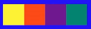

Se pegarmos qualquer cor primária, a sua cor complementar é sempre uma cor secundária. De forma similar, qualquer cor terciária tem uma outra cor terciária como complementar. Quando juntamos duas cores complementares, sempre obtemos o cinza.
Diferente das cores complementares, que estão do lado extremo oposto no círculo cromático, as cores análogas são aquelas que são imediatamente vizinhas entre si.
Dá pra notar que essa aqui é uma combinação dos dois tipos anteriores, não é? Essa técnica quebra um pouco o ritmo semelhante das cores análogas, adicionando uma cor que cria um grande contraste com as três análogas.
Nesse tipo de harmonia, escolhemos duas cores análogas (consecutivas) e depois pulamos uma terceira cor (em qualquer direção) e escolhemos a quarta. Com essa técnica, conseguimos um resultado parecido com o das cores análogas simples, mas com um pouco mais de contraste sem ter que escolher uma cor complementar
Um tipo menos usado de harmonia, já que às vezes não funciona tão bem assim. Vamos escolher a primeira cor e depois mais duas com intervalo constante entre elas.
Técnica bastante utilizada e que garante uma grande riqueza de cores, onde escolhemos três pontos equidistantes no círculo cromático.
Bastante semelhante ao esquema triádico, mas permite selecionar quatro cores com um contraste razoável entre as cores escolhidas. Esse esquema gera sempre um quadrado perfeito com os pontos selecionados.
Com essa técnica, vamos escolher dois pares de cores complementares, que não serão necessariamente análogas ou consecutivas. Isso vai nos garantir dois pares de cores, com bastante contraste entre si.
Uma harmonia bem diferente das anteriores, que usa apenas uma cor e varia apenas a sua saturação e o seu brilho. Essa combinação geralmente gera pouquíssimo contraste entre as cores escolhidas, mas acaba gerando um resultado visual bem agradável aos olhos, conhecido como “degradê”.